Getting Started
In this section, we will demonstrate the usage by scenarios.
But before starts talking about the user interface of it, you need to know how to download and install Autopilot Helper correctly.
Download and Install
To download AutopilotHelper, you may head to GitHub.
Once you land to Release page, you will noticed multiple releases with different tags and titles.
Normally, you will only need the release whose title or tag contains keyword "LTS". It means it's long term support release which should be stable enough to use for production environment.
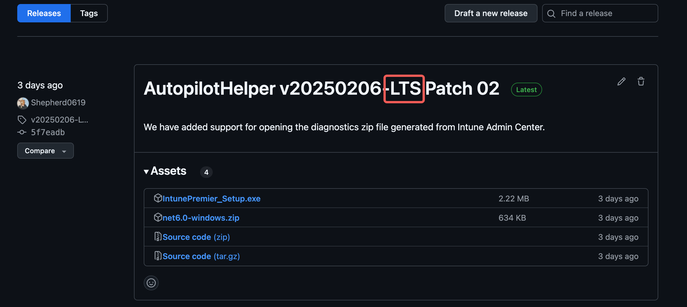
For each release, we include both EXE installer and ZIP. We recommend you using EXE installer instead as it will help creating the shortcut for different purposes such as opening Reg Viewer only.
Once you have downloaded the installer, double click on it to launch and follow on-screen instruction.
After successful installation, you should be able to notice shortcuts created by installer in your desktop and Start Menu.
For the Start Menu, they should include the following: 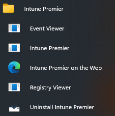
For "Intune Premier", it will launch AutopilotHelper.exe without any parameters, and the end user experience should be:

For "Event Viewer" and "Registry Viewer", it will launch the main executable with corresponding parameters.
If you are using ZIP instead, you may need to create shortcuts manually or using Run/CMD to launch those tools.
AutopilotHelper.exe --event-viewer
AutopilotHelper.exe --reg-viewer
And the end user experience should be:
 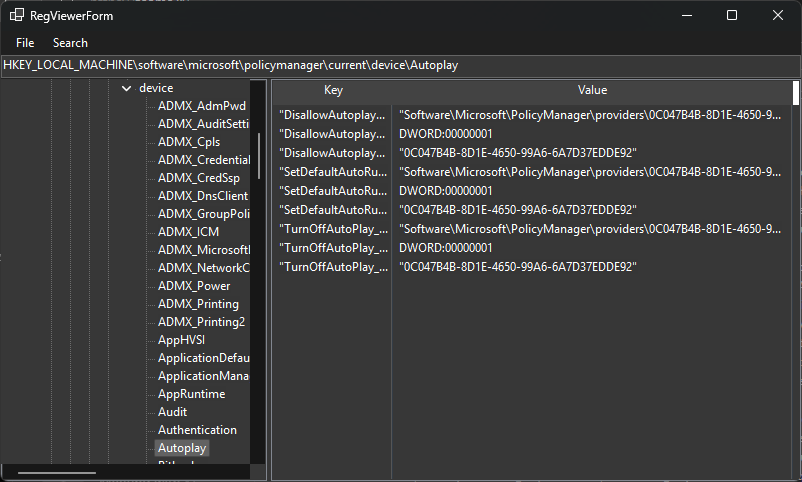
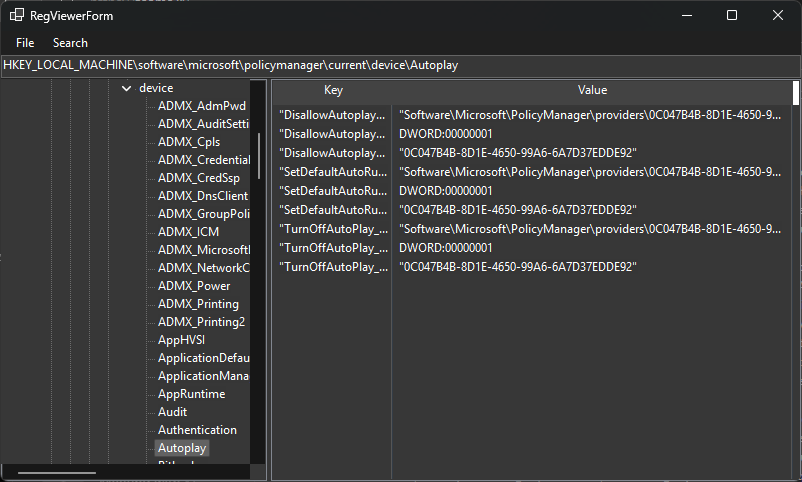
Startup Screen
In this part of user interface, you can do the following tasks:
- Open MDM diagnostics
- Collect MDM diagnostics
- Quickly access the recent opened MDM diagnostics.
We believe this should not be a huge problem for understanding the user interface. But here are couple things you may need to pay attention to:
1. File extension filter
When you click on "Open MDM Diag", there should be a dialog pop up to let you point out the diagnostics located in your storage. By default, the filter is CAB.
If you wish to open ZIP, remember clicking the dropdown highlighted and switching to ZIP.
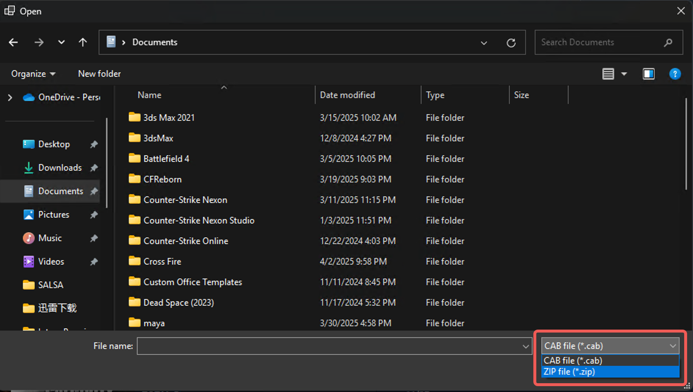
2. CAB Extract
By default, the program will use Windows built-in command line application called "expand.exe" to do the job. So you will notice there is a terminal window pop up and will disappear soon once the job is done.
var process = new Process();
process.StartInfo = new();
process.StartInfo.FileName = "expand.exe";
process.StartInfo.Arguments = $"\"{FilePath}\" -F:* \"{Path.Combine(TmpWorkspacePath)}\"";
process.Start();
process.WaitForExit();
if (process.ExitCode != 0)
{
throw new Exception($"expand exit code is {process.ExitCode}");
}
[!IMPORTANT] Please try not interrupting its process such as click on the content of terminal window which may cause the application pause and you have to press ENTER to continue.
3. Supported MDM diagnostics file
- zip/cab file generated by using the following command
mdmdiagnosticstool.exe -area "DeviceEnrollment;DeviceProvisioning;Autopilot" -zip "c:\users\public\documents\MDMDiagReport.zip"
- diagnostics collected from Intune Admin Center. 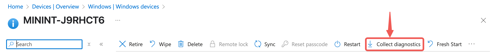
- One Data Collector (TBA, aka To Be Annouced)
MDM Diagnostics Analysis Window (aka Main Window)
After you open the MDM diagnostics successfully, the end user should see the following window as soon as possible:
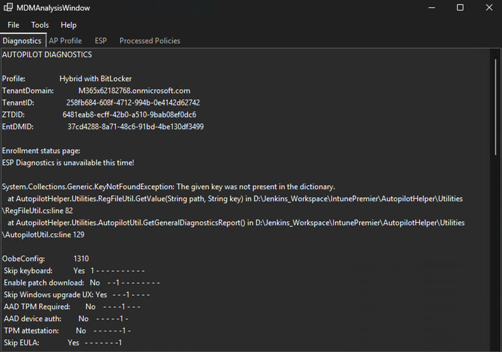
Some tabs like "Processed Policies" may take time to load, please allow them some time.
Diagnostics tab
This tab will show the result similar to PowerShell script "Get-AutopilotDiagnostics". The project rewrote the script into C#.
The reason for doing so is: 1. More graceful exception handling. 2. Improve the way to locate the latest Windows ADK for decoding hardware hash.
Comparing to the script, here are missing features and we are planning to release them soon: 1. Observed timeline.
AP Profile tab
This tab will show the formatted text from "AutopilotDDSZTDFile.json".
ESP tab
This tab will read the ESP tracking status from "MdmDiagReport_RegistryDump.reg" and render them on WinForm in a familar way like OOBE.
Temporary Workspace Folder
The folder is located in C:\Users\YourUserName\AppData\Local\Temp\IntunePremier\TmpWorkspace
You may also quickly navigate to the folder by the following:
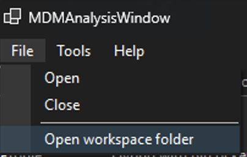
Once the window get closed, it will automatically clear the temporary folder used for extracting the diagnostic.
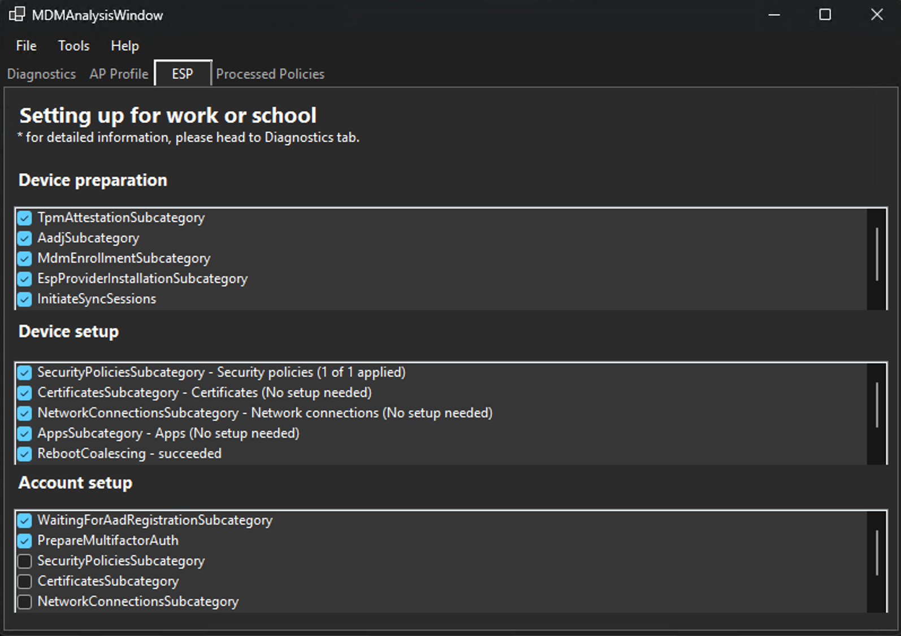
If you are using 3rd party software like Qihoo 360 Total Security, they should be able to clear the folder too.
(PS: I believe Windows Settings -> System -> Storage can also do that. )
[!NOTE]
If you notice one or two ESP stages shows empty, it is probably normal as target PC may not reach that stage.If all three stages shows empty, it probably means the program has issue with reading ESP status from registry dump (like registry key does not exist, or even the registry dump does not exist), or the target PC is not an Autopilot device.
Processed Policies
This tab will allow you to observe all CSP exist on target device. It should includes not only the policies pushed from Intune Admin Center, but also device information, etc.
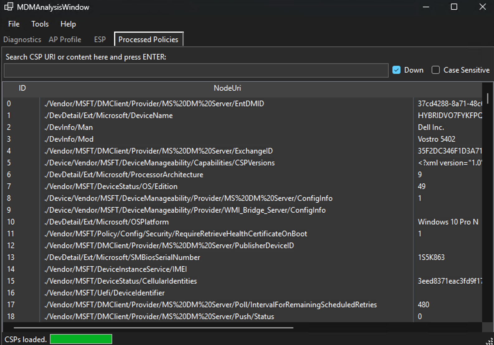
To search a CSP, please use the input field above the list view. You can start type a keyword and press ENTER to find next.
It will look for CSP URI first. If there is no hit, it will starts looking for value instead.
Context Menu
You may notice a menu strip near the top of window. It will allow you to access the folder where the diagnostics is extracted into, and also open the Reg Viewer and Event Viewer for you.
Event Viewer
The event viewer will allow you to open evtx file in a lightweight way, comparing to the one comes with Windows operating system.
The only reason I design this thing is to eliminate most of the time spent on waiting to open the Shell-Core evtx file when doing Autopilot troubleshooting.
To ensure consistent user interface experience, I tried making the WinForm similar to the one comes with Windows. You can use Ctrl+F to open Find Next, you can also set Filter via context menu on the top just like traditional event viewer do.
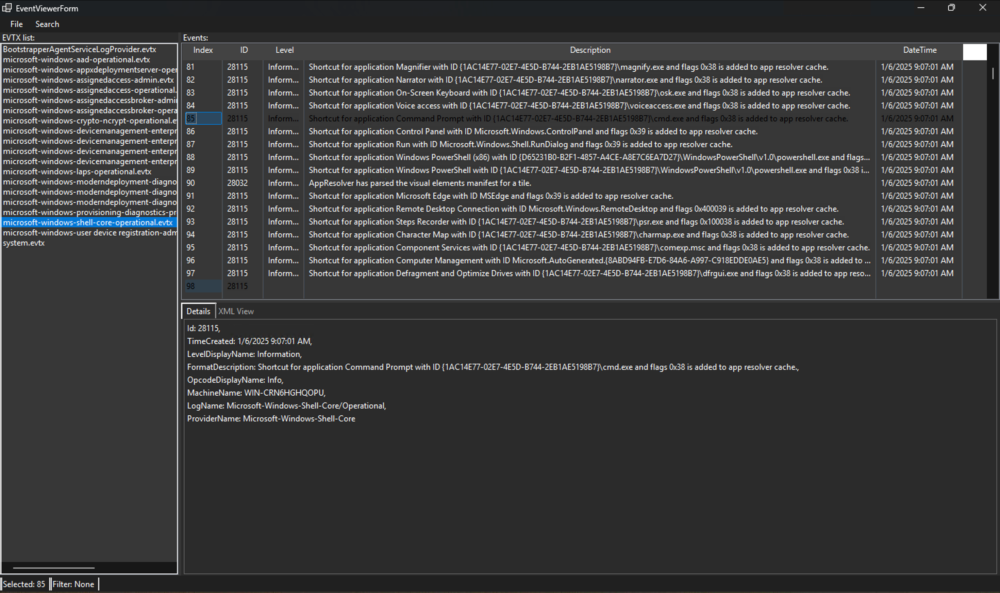 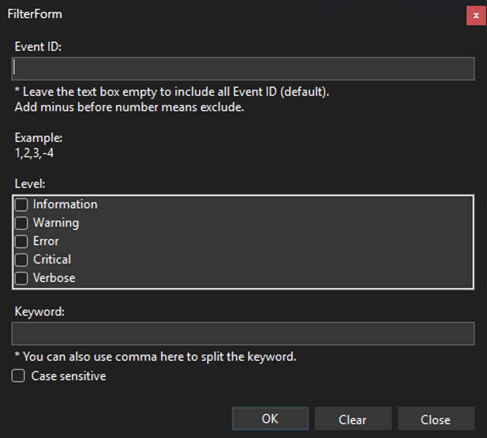 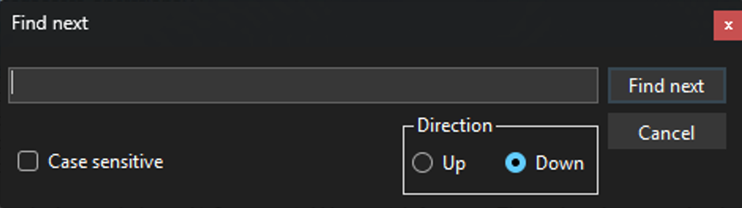
By default, the list view on the left will display all evtx files present in MDM diagnostics unless you launch the Event Viewer externally.
You can also open external evtx file via context menu. All evtx files opened in this way will be also listed in the list view but with "[EXT]" at the beginning.
[!TIP] By default, the Find Next will only look for the formatted, human readable description which is the forth column.
Reg Viewer
This tool will help you review the registry dump just like regedit. In regedit days, we are unable to do something like that but to use text editor.
And now you can review the registry keys with a simple and nice tree view. You can also type the registry path in the address bar to locate.
The rest should be the same as regedit. Ctrl+F to find next also works in this tool.
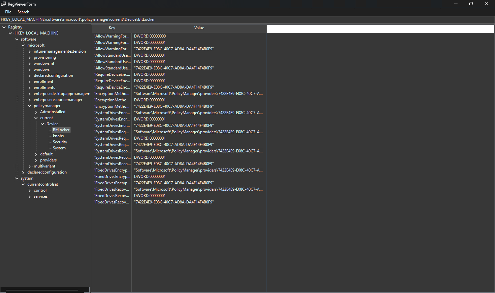
Find Next in this tool may take relatively long time comparing to others. In here, we will keep cache of search result for the keyword you type. If you try changing the keyword, it will initiate indexing again.
For more information, please refer to the text message shown in the Find Next dialog.
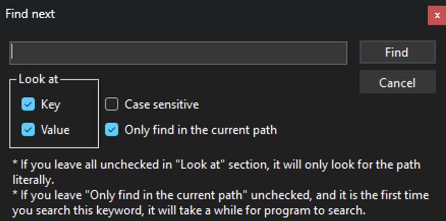
Need more help?
Please raise a ticket in Issues with clear, simple title and description.
You may also leave an email with "[Autopilot Helper]" at the beginning of subject line.